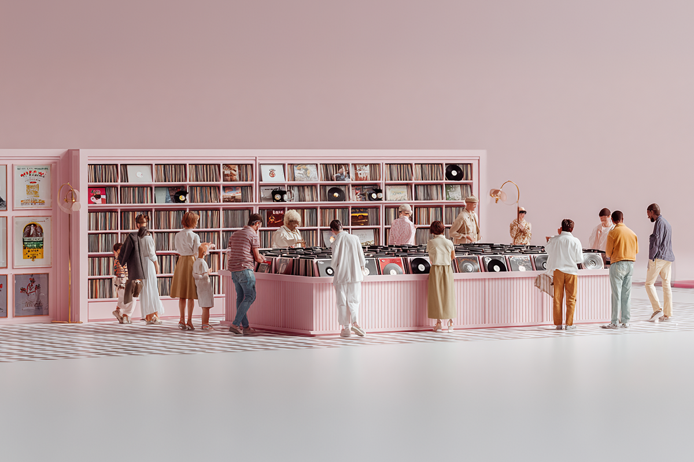
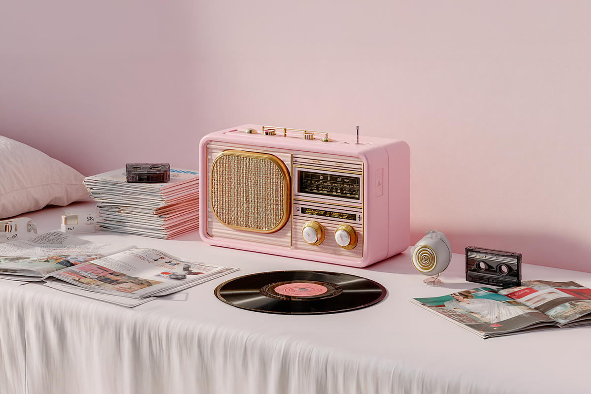
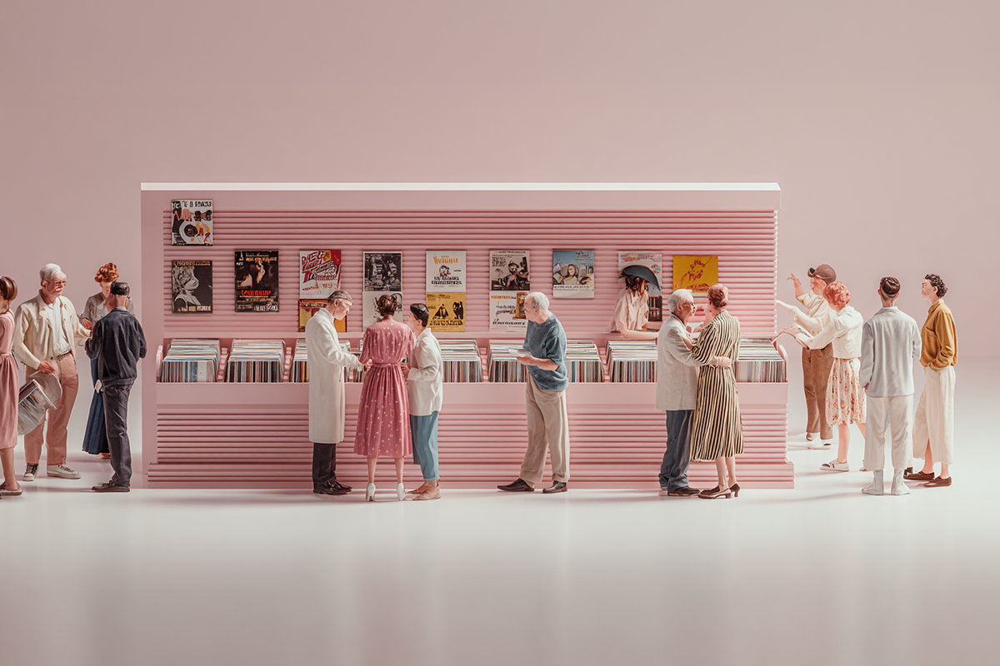
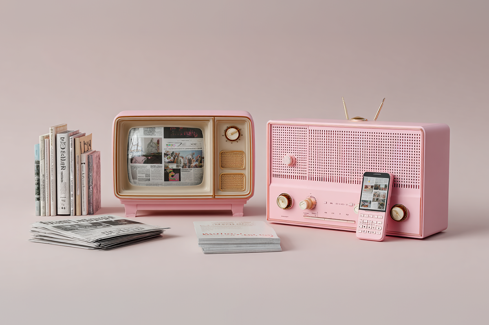
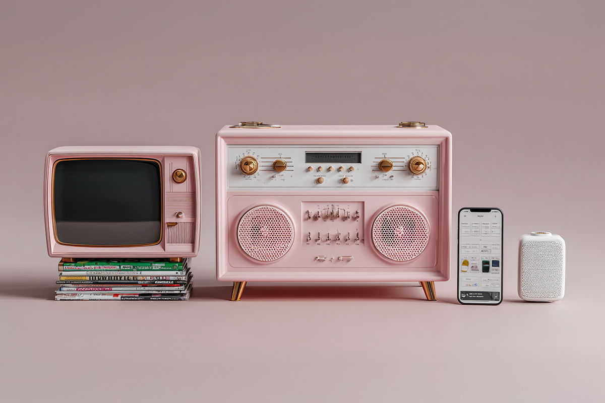

¿Cómo descubríamos música antes del algoritmo?
Un viaje por las formas con las que conocíamos música, lejos del internet
Un viaje por las formas con las que conocíamos música, lejos del internet

En una era digital cada vez más expansiva, que nos aleja año a año de aquellos tiempos en que escuchar música implicaba más de un artefacto y algo de paciencia, vale la pena mirar hacia atrás. Ya saben, no solo para activar la nostalgia de quienes crecimos en lo análogo, sino también para que las generaciones más jóvenes entiendan cómo se vivía y se disfrutaba la música antes de que internet —y sus algoritmos— lo ordenaran todo.
Así que, ¿cómo era la cosa hace algunas décadas atrás? Acá te mostramos algunos ejemplos de cómo descubríamos a nuestros nuevos artistas favoritos antes de que el internet personalizara absolutamente todo lo que ponemos sobre su mesa.

La primera forma que se viene a la mente cuando se trata de hacer un resumen sobre las formas clásicas de escuchar música, era a través de la radio. Ahí, en las estaciones radiales de preferencias, podíamos conocer algunos de los lanzamientos del momento. Prácticamente, se nos presentaban los que serían los próximos hits, las canciones que nos iban a acompañar los próximos meses.
Sobre esta misma premisa, es que también tenemos el cassette, elemento que utilizábamos para grabar las canciones favoritas que salían en estas mismas estaciones radiales. De esta forma, era fácil crear nuestras primeras playlists personalizadas, las que también se solían regalar a tus seres más queridos.
Además de contar con conocedores de la música en sus tropas, las disquerías marcaron un punto relevante en cómo descubríamos nuevos géneros y bandas. Desde la experiencia inmersiva de entrar a estas casas del sonido hasta el hecho de entablar conversaciones con personas con los mismos o distintos intereses musicales, las disquerías se volvieron uno de los puntos más clásicos para conocer música.
Sin ir más lejos, en estos lugares fue donde los vinilos, los cassettes y posteriormente los CDs se vendían. La gracia de todo el proceso, tras la decisión de comprar estos trabajos, era conocer una o dos canciones y después, básicamente, confiar en que el disco seguiría con una vibra similar a los singles que ya conocías y te gustaban. No había mejor manera de descubrir nuevas canciones que esa: llegar a casa, con tu nueva compra, y adentrarte con sorpresa a las desconocidas playlist de tus artistas favoritos.

Desde siempre el boca en boca ha sido una de las maneras más sencillas de conocer nueva música. Desde una conversación a un trueque de discos, las relaciones humanas, tras las conversaciones sobre nuevas sonoridades o sobre tus bandas y artistas favoritos, ha sido la manera de compartir conocimientos musicales con amigos, hermanos mayores, padres, comunidades, parejas, o desconocidos.
Como explicaba con anterioridad, la música circulaba a través de copias prestadas, cassettes grabados o CDs quemados, reforzando un sentido comunitario del descubrimiento musical.
Qué tiempos cuando se le daba espacio en los medios escritos, como las revistas especializadas, suplementos culturales o fanzines independientes, a ser parte de la escena musical. Estos materiales funcionaban como curadores de escena, explicaban los porqués tras cada proyecto y eran, sin ir más lejos, una forma bastante informativa de interesarte en nueva música.
Entrevistas, reseñas y rankings influían directamente en qué artistas se buscaban luego, marcando la pauta en los próximos trabajos a escuchar. La fórmula funcionaba así: leías la reseña y partías a la disquería.

En los 80’s programas de videoclips, rankings o especiales, como MTV en su época fuerte y después otros canales y programas de televisión, eran una ventana global para todo tipo de música, sin importar el lugar. Sobre todo en los 90’s y los 2000, este tipo de contenido se volvió el blueprint, y era lo que marcaba el precedente para lo que luego sonaba en la radio, tanto en inglés como en español.
La imagen tenía tanto peso como el sonido y el acceso estaba mediado por decisiones editoriales, no por personalización. Como la imagen era importante, los artistas comenzaron a prestar especial atención a sus vídeos musicales, lo que fue bastante notorio, sobre todo en los años de MTV.
Mucho descubrimiento ocurría en conciertos pequeños, tocatas, ferias o centros culturales, escenas territoriales que todavía viven, pero las cuales ya no son tan reconocidas. La música hace unos años, se conocía en contexto, asociada a lugares y comunidades concretas.
Las escenas locales —tocatas, clubes pequeños, centros culturales, ferias de discos o espacios autogestionados— funcionaban como nidos de circulación musical. Conocer nueva música implicaba estar ahí: asistir a un show, compartir el espacio, reconocer rostros habituales, hacer nuevos amigos y construir afinidades a partir de la experiencia compartida.
Y lo mejor, es que estos espacios también permitían una relación más orgánica entre artistas y público. No existía una mediación masiva ni una promesa de viralidad inmediata. Sin embargo, esa misma limitación fortalecía el sentido de pertenencia y de identidad: una banda “era” de cierto barrio, ciudad o circuito.

Con la llegada del streaming y la curaduría algorítmica, muchas de estas dinámicas de escucha y descubrimientos musicales se transformaron. Para muchos, lo que ofrece el internet y sus tecnologías globalizadas ha sido un paso innegable para los músicos, ya que han logrado posicionarse a través de distintas plataformas con tal de llegar a cada rincón del globo. Sin embargo, no podemos negar la nostalgia y el cariño tras un descubrimiento orgánico. ¿Y ustedes no lo extrañan?
 Cultura
CulturaSé que suena raro hablar de calor extremo mientras en Chile todos están buscando la parka más gruesa del clóset.
 Cultura
CulturaEl hecho de que estemos entrando al mes de julio no se puede creer. Pero lo que tampoco se puede creer es la cantidad de artistas que han…
 Cultura
CulturaCuando hablamos de trabajos clásicos de la música chilena, siempre se nombran los discos de Violeta Parra, Víctor Jara, Los Jaivas o…